BMW E30 318 iS

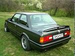
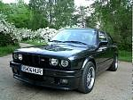
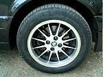
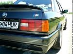
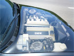
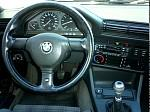
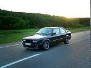
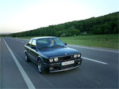
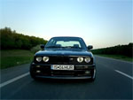
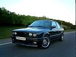
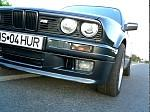
In these photos is depicted my BMW 318 iS E30 Coupe. It was bought in February 2003 with 140tkm on clock as 2nd hand and it was in quite good condition. The car also known as "the little M3", is from July 1990.
The coupe had from the factory the following endowments: metallic painted in black diamond, full M-Technic II package (M aerodinamic spoilers round, M-Tech stiffened suspension, M steering wheel, sport seats, emblems), electrical sunroof, shadowline, green tinted windows, soundsystem with Radio Bavaria Business and 6 CD-Changer, DE-headlights, velour floormats and of course power steering, cat-back system and so on.
I have installed K&N air filter, Viper 850XV alarm, central locking, smoked Hella turn lights, black aluminium race mesh, Kamei eyelids, 15x7 MiM wheels with 205/55 Pirelli P6000 Powergy tires and AC Schnitzer shift knob.
Planned upgrades: Eibach springs and Bilstein shocks, aluminium strut braces, BBS RS001 with Bridgestone Potenzas, smoked Hella headlights, electrical sport mirrors, Supersprint exhaust (or Sebring), ATE Powerdiscs front and EBC Greenstuff brake pads round.
|
|||||